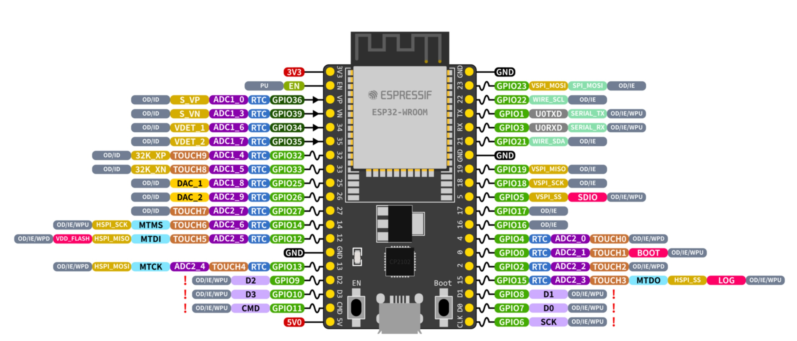

Intro

A little bit about my beliefs and aspirations...
I believe that there are two types of individuals: those who pursue careers that aligns with their natural talents, and those who embrace challenging paths that they are passionate about, dedicating significant effort to excel in their chosen fields. I identify with the latter, as my journey has been marked by considerable struggles to reach my current position.
I recall attending my first programming class with a sense of doubt, wondering if I belonged there. Despite facing numerous late-night projects and underperforming on many of them, I refused to be discouraged. I was determined not to let my acceptance into this major go to waste. The satisfaction of resolving those elusive segmentation faults, often after hours of effort, fueled my persistence. This resilience has paid off, as I will be graduating from the University of California, Irvine with a B.S. in Computer Engineering a year ahead of schedule. My primary focus has been on Embedded Systems development, which involves an in-depth exploration of Operating Systems.
After completing my first internship and a relatively long job search (5 months), I landed a position at Innova Electronics Corporation as an Embedded System Engineer Intern. I currently work on the inverter project writing software that is related to safety. What happens when a vehicle crashes? What happens if the microcontroller stops beavhing as it should? What if the processor just resets randomly? With a team of experts, we help answer and execute these challenging questions.
I am in the early stages of my career, bringing with it a strong motivation and passion for learning new technologies. I am currently focused on entering the Embedded Linux domain, dedicating myself to personal projects and deepening my understanding of core components such as the Kernel and Bootloader.
Work

Innova Electronic Corporation
Embedded Systems Engineer Intern
- Developed the 5610 and 5210 OBD2 Scan Tools, using C, leveraging various third-party libraries and APIs for enhanced diagnostic capabilities.
- Designed and implemented a testing framework for optimizing read/write performance for an embedded MultiMediaCard (eMMC) on the Renesas R7FA6M5BH3CFC microcontroller using C, increasing throughput performance by 78%.
- Revised the File Allocation Table (FAT) file system database to minimize the behavior of fragmentation by allocating contiguous space for files to improve stability.
- Utilized J-Link and IAR Embedded Work Bench to modify file handles, manage buffer pointers, and ensure accurate error handling and logging in storage media operations.
- Integrated CI/CD pipelines through GitLab, facilitated comprehensive unit testing, and maintained clear, thorough documentation.

SigmaTronix
Electrical Test Engineer Intern
- Performed electrical and functional tests utilizing a Multimeter, Teradyne Optima 7300 Inspection System, and MyData TP9-UFP for the development of 100+ PCBs for Intel, MX Imaging, Relativity, and Marvell.
- Facilitated the fabrication process by leading PCB Assemblers and Quality Control Technicians, overseeing a comprehensive Bill of Materials, and effectively managing time constraints while addressing design defects for customer satisfaction.
- Performed SMD soldering and soft soldering in preparation for electrical testing using Bed of Nails testing and X-ray imaging systems.
Resume
Download my resume using the button below...
Download
Projects

BME280 SPI Driver C++ (ESP32)
The BME280 SPI driver was written using C++ and programmed on the ESP32 using ESP-IDF. The driver was written from scratch using the reference manual and supports all available reading from the sensor. Github shows various drivers for I2C implementation, however very limited for SPI, which is one of the reasons for implementing this driver.

Embedded Linux (Beaglebone Black)
In the attempt to break into the Embedded Linux industry, I have been working with various aspects of Linux to learn the fundamentals. I manually configured a linux image using buildroot to learn and understand Bootloader, Kernel, and file system configurations. I also created a TFTP server on a host Ubuntu machine to transfer files between the host and beaglebone. In the process the beaglbone booting up, it fetches the Linux image files from U-boot to boot into Linux. The linux image (zImage and .dtb are written into memory. I also wrote a extremely simple Linux kernel module and modified the build configuration files such as KConfig and Makefile to compile the module directly into the source.

Basic platform game (ATmega32)
Using an Atmega MicroController, LCD, and Keypad, my partner and I created a small game that is similar to the T-Rex game on Chrome. The map is generated randomly and the speed accelerates as the game progresses. The code is constantly checking for input to make sure there is no latency. This was by far one of the most interesting and exciting projects I have worked on.